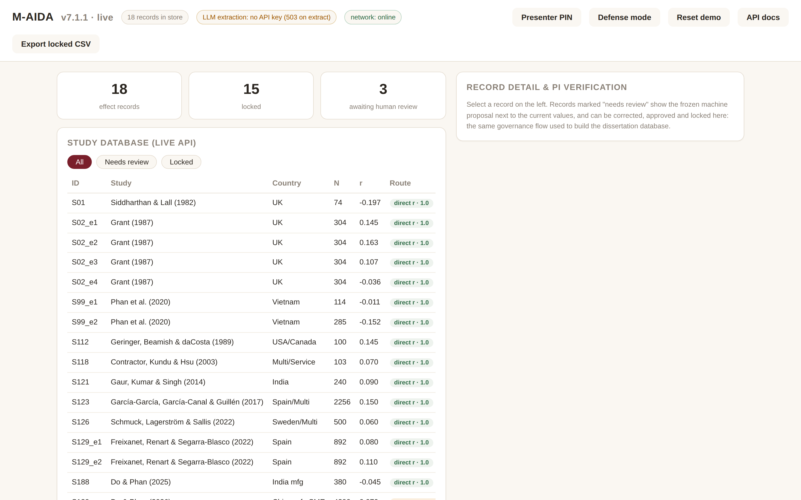

Academic Demo
Bản công khai trên GitHub Pages để giới thiệu phương pháp, dữ liệu tổng hợp và trải nghiệm nghiên cứu.
Bản trình diễn có kiểm soát của quy trình M-AIDA dùng trong nghiên cứu P6: đọc bằng chứng thống kê, kiểm tra đề xuất của máy, phê duyệt, khóa bất biến và xuất dữ liệu tái lập. Backend FastAPI thật chạy cục bộ; không có phản hồi nghiên cứu được mô phỏng.
Các phiên bản phục vụ mục đích khác nhau và không được trình bày như một SaaS đã hoàn thiện khi hạ tầng thương mại còn ở giai đoạn pilot.
Bản công khai trên GitHub Pages để giới thiệu phương pháp, dữ liệu tổng hợp và trải nghiệm nghiên cứu.
Ứng dụng cục bộ có Presenter PIN, lưu trạng thái, reset seed, API thật và quy trình Verify–Lock–Export.
Định hướng thương mại hóa, dual licensing và các gói cá nhân, nhóm nghiên cứu, tổ chức.
M-AIDA là công cụ chuẩn bị dữ liệu hỗ trợ P6, không phải bằng chứng thay thế cho P6. Một benchmark độc lập 30–50 bài được khóa trước theo tuyến direct r, t→r và beta→r.
Schema chuẩn vàng hai coder, script tính precision/recall/F1, sai số r, correction, provenance và thời gian đã có trong repository.
Sampling frame đã tạo theo DPL × ICRV nhưng chưa khóa; còn phải xác nhận full text và loại mọi bài từng dùng để chỉnh M-AIDA.
Chưa công bố accuracy/time-saving. Benchmark không đánh giá screening, risk-of-bias, mô hình meta-analysis hoặc diễn giải kết quả P6.

Một kịch bản sáu phút, có đường lui khi mạng hoặc nhà cung cấp LLM không khả dụng.
Lọc bản ghi locked và pending trong bộ P6 mẫu đã kiểm chứng.
So sánh machine proposal với giá trị hiện hành và nguồn thống kê.
Nhập ghi chú PI, phê duyệt và chứng minh khóa bất biến bằng phản hồi API.
Xuất CSV chỉ gồm các bản ghi đã khóa và mở OpenAPI documentation.
Windows có launcher một lần nhấp. macOS và Linux sử dụng script đi kèm.